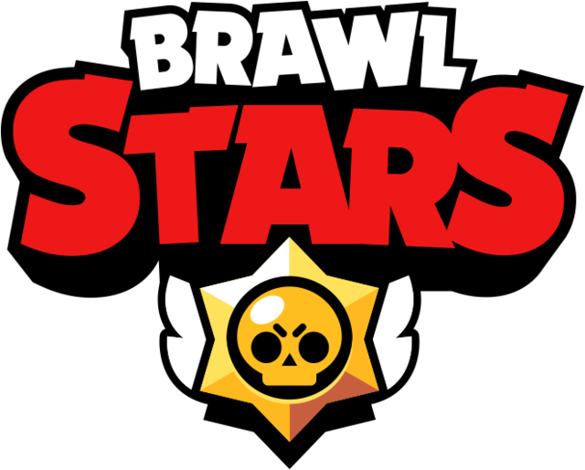

О нашей игре
Объединяйся с друзьями и готовься к эпичной онлайн-бойне! Открывай новые режимы и разнообразных бойцов с уникальными способностями. Уничтожай, взрывай и побеждай в особенных режимах игры «Brawl Stars»!

Геймплей
Игроку предлагается на выбор большое количество разных бойцов с различной механикой игры и разные режимы игры. Изначально доступен лишь начальный боец — Шелли, остальных бойцов можно разблокировать на Дороге Старр или купить в магазине.
Каждый боец будет отличаться своей атакой (радиусом и уроном), своим супером, гаджетами, звездными силами и гиперзарядами, количеством здоровья и скоростью — ко всем им нужен разнообразный подход, чтобы добиться победы.!
Правила
Запрещены:
Вандализм на страницах;
Флуд (засорение всякой бесполезной информацией), спам (распространение рекламной информации в не предназначенных для этого местах)., оффтопик (неуместные темы) в комментариях, обсуждениях;
Оффтопик разрешен на стенах обсуждения и специально отведённых местах.
Статпад (удаление/добавление содержимого для быстрого получения правок/достижений);
Постоянный некропостинг (поднятие темы, которая остается без продолжения (ответов) в течение длительного времени);
Редактирование чужих страниц и стен обсуждений без согласия противоположной стороны;
Пиар и самопиар. Под исключения попадают игровые клубы в Brawl Stars, если нет других нарушений;
Токсичное поведение, оскорбления участников прямые либо косвенные, неприличные выражения и медиа-контент;
Кибербуллинг и буллинг других участников;
Участие в конфликтах и провоцирование других участников;
Нацизм, расизм, шовинизм, сексизм и др. дискриминация, их проявление, обсуждение и упоминание связанного с этим в любом пространстве вики;
Обсуждение политики и религии;
Создание мусорных страниц;
Выдача себя за другого участника, либо сотрудника FANDOMа, (бюрократ, администратор, модератор, и т. д.), если вы таковым не являетесь;
Распространение личной информации участника без его согласия;
Упоминание других участников без какой-либо надобности;
Удаление/закрытие постов, комментарии, блоги, статьи, сообщения из-за личных причин (только если перечисленное нарушает правила);
Скрывание фактов жалоб на самого себя, либо на других модераторов и администраторов;
Игнорирование нарушений правил других участников по дружеским причинам;
Многие запреты компании Supercell:
Демонстрация любых программ, направленных на модификацию игры;
Покупка и продажа игровых учётных записей;
Незаконное получение учетных записей других игроков.
Все правила, касающиеся обычных участников, применяются и к администраторам, и к модераторам.
Brawl Pass
Brawl Pass — это основная система продвижения в игре, добавленная в Майском обновлении 2020 года.

Ящики
Ящик — предмет, при открытии которого случайно могут выпасть бойцы, монеты, очки силы, кристаллы, гаджеты, Звёздные силы, Гиперзаряды, удвоители жетонов и косметические элементы.
Содержание
1 История ящиков
2 Интересные факты
3 История изменений
4 Словарь сленга
5 Галерея
6 Эффекты открытия
6 Неиспользованные модели
7 В прочих элементах игры
Трофейный ящик — предмет, получаемый в конце сезона Brawl Pass. Всего существует 5 различных уровней данного ящика. Уровень ящика зависит от того, сколько Трофеев сезона было заработано игроком в данный сезон. Игроки не имеющие трофеев сезона получают маленький ящик.


Монеты
Монеты (англ. Coins) — валюта, используемая для улучшения бойцов и покупки Гаджетов, Звездных сил, Снаряжений и Гиперзарядов, а также на покупку Серебряных и Золотых скинов для бойцов. Монеты можно получить: На Пути к славе, в качестве награды в определённом количестве; В качестве подарка в Магазине; Среди наград Brawl Pass в определённом количестве; Во время Мини-События "Лавина монет"; Среди наград Мастерства в определённом количестве; Купить в магазине за Кристаллы; Из Призов Старр; Покупка в Магазине клуба (до 24/10/23) Из Ящиков (эксклюзивно для Китайской версии)

Кристаллы
Кристаллы (англ. Gems) — валюта, получаемая в Brawl Pass или в Магазине и используемая для покупки скинов, удвоителей боевого опыта, монет, ежедневных предложений и акций. Получение Кристаллы можно получить: При покупке в магазине за реальные деньги; При прохождении Brawl Pass; В качестве подарка в магазине; При победе в конкурсах от Supercell (редко); Из Ящиков (до 13/05/20)

Кредиты
Кредиты (англ. Credits) — валюта, добавленная в Декабрьском обновлении 2022 года. Используется для разблокировки бойцов на дороге Старр и улучшения Славы. Применение При каждом получении Кредитов, они будут добавляться к выбранному для разблокировки бойцу. Когда игрок наберёт нужное количество кредитов, они обнуляются, а игрок получает нового Бойца. При разблокировке всех бойцов, кредиты будут повышать уровень Славы. Редкий боец — 160 Credits-0 Сверхредкий боец — 430 Credits-0 Эпический боец — 925 Credits-0 / 694 Credits-0(для первого бойца) Мифический боец — 1900 Credits-0 / 950 Credits-0(для первого бойца) Легендарный боец — 3800 Credits-0 / 1900 Credits-0(для первого бойца)

Блинги
Блинги (англ. Blings) — валюта, заменившая Звёздные Очки в Апрельском обновлении 2023 и использующаяся для покупки Косметических Предметов в Каталоге. Применение Блинги можно потратить на: Покупку Скинов; Покупку Значков; Покупку Спреев; Покупку Иконок. Получение Из Трофейных Ящиков. По окончании Сезона Силовой лиги (до 27/02/24); Как награду в Испытаниях; В Премиальном Brawl Pass и Brawl Pass Plus (Всего 2200 в премиальном Brawl Pass, еще 1500 в Brawl Pass Plus); Из Призов Старр.

Трофеи
Трофеи являются игровым элементом, получаемым в соревновательных событиях, будь то режимы "3 на 3", 5 на 5 или Столкновение. Трофеи для игрока одинаковые, однако они делятся на общие и Трофеи бойца. При победе в событии они начисляются игроку и бойцу, на котором было выиграно сражение. Также и в обратную сторону - если он проиграл, то трофеи отнимаются.
Максимальное количество Трофеев, полученное бойцом, показывается в Уровнях. Например, при получении 300 Trophy игрок получает 16 уровень Уровень 16 и дополнительные 10 Battle XP.
Общее количество Трофеев всех бойцов показывается в профиле и необходимо для продвижения на Пути к славе.
Достигнув отметку в 1000 обычных трофеев на бойце, игрок получает МАКСИМАЛЬНЫЙ уровень Уровень MAX. После этого подбор противников и уровень игры координально меняется, также за победу/поражение игрок будет получать/у игрока будут отнимать Трофеи сезона. Но если игрок проиграет и количество общих трофеев будет ниже 1000, то он сможет получить обычные трофеи заново.

Путь к славе
«Собирай трофеи, чтобы получать награды и переходить в новые лиги! Твои трофеи — это сумма трофеев всех твоих бойцов.»
Спреи — это аналог значков, которые оставляют рисунок в виде граффити на поверхности земли. Они не дают никакого преимущества в бою. Спреи открываются с 200 Trophy, второй слот за 650 Trophy, третий слот за 2900 Trophy, четвёртый слот за 3500 Trophy. Всего в игре более 200 спреев.
Спреи

Значки
«Значки — эмодзи с изображением бойцов. Значки обладают 10 различными эмоциями и всего 4 видами редкости. Значки можно применить в чате команды, в бою и в чате клуба. Всего в игре более 1700 значков.»

Призы Старр
Призы Cтарр (ака. Звезда, Старр Дроп)— это система получения случайных наград и призов за победы, добавленная в Июньском обновлении 2023. Они являются заменой удалённым ящикам. Для получения Призов Старр нужно побеждать в боях в любых событиях. Они выдаются за первую, четвёртую и восьмую победы. Призы обновляются каждый день в 11:00 по МСК. Их можно получить в событии «Мегакопилка», на пути к славе, в ранговом бою и в Brawl Pass. ДорожкаПризовСтарр Призы Старр имеют 7 редкостей: редкий, сверхредкий, эпический, мифический, легендарный, гиперзаряженный и ранговый. Изначально, Приз редкий, но затем его редкость можно улучшить методом нажатия на экран, на это даётся 4 попытки. Чем больше редкость, тем лучше награда. Из Призов Старр можно получить только одну награду за раз из следующих: монеты, удвоители жетонов, блинги, очки силы, кредиты, значки, иконки, спреи, скины, бойцов, Гиперзаряды, а также гаджеты и Звёздные силы (если доступны)..


Монстрояйца события "Годзилла"
Монстрояйцо — особый временный вид Приза Старр, который даётся за победу в режиме Разгром Города (в ячейке яиц максимум 6 штук) и за ежедневные победы (2 штуки). По сути, Монстрояйца отличаются от Призов Старр тем, что механика отличается способом увеличения редкости, а именно свапами в разные стороны. После четырёхкратного нажатия игроку предоставляется возможность улучшить редкость Монстрояйца при удачной смене редкости. Редкости Монстрояиц В скобках указаны шансы выпадения Редкое Сверхредкое Эпическое Мифическое Легендарное Шанс получения редкого яйца составляет 50%. MonsterEgg rare Из него можно получить: Случайная Мутация (50%). 100 Coin (20%) 50 Power Points (15%) 50 Blings (15%) Компенсация За дубликаты предметов, которые у вас уже есть, игра выдаёт компенсацию в виде той или иной валюты (блингов, кредитов или монет): ОбычныйЗначок Обычные значки — 100 Blings РедкийЗначок Редкие значки — 100 Blings ЭпическийЗначок Эпические значки — 100 Blings Sprays logo yellow Спреи за 19 Gem — 100 Blings Sprays logo yellow Спреи за 29 Gem — 100 Blings Profile picture Иконки профиля — 100 Blings РедкиеСкины Редкие скины — 500 Blings СверхРедкиеСкины Сверхредкие скины — 1000 Blings ЭпическиеСкины Эпические скины — 1000 Blings Pедкие бойцы — 100 Credit Сверхредкие бойцы — 250 Credit Эпические бойцы — 500 Credit Мифические бойцы — 1000 Credit Легендарные бойцы — 2000 Credit Гаджет Гаджеты — 1000 Coin StarPower Звёздные силы — 1000 Coin Unknown Hypercharge Гиперзаряды — 1000 Coin Мутация Мутации из редких Монстрояйцо Icon — 20 Credit Мутация Мутации из сверхредких Монстрояйцо Icon — 50 Credit Мутация Мутации из эпических Монстрояйцо Icon — 100 Credit МифическиеСкины Скины из мифических Монстрояйцо Icon — 200 Blings ЛегендарныеСкины Скины из легендарных Монстрояйцо Icon — 1000 Blings.

Создание карт
Создание карт (англ. Map Maker) — функция, добавленная в Brawl Stars в версии 22.10.20. В редакторе карт можно создавать свои уникальные карты для игры на них в Дружеском бою. Создание карт открывается по достижении 1000 Trophy.

Наш логотип!
Донат
Мы предлагаем широкий спектр услуг для того,что бы обуть вас на 1000000000000000000000$.
НАШИ КОНТАКТЫ:+5674-67-546-88439-6647-586-903-9-587-93-759-437593-85908065-9395-38Создатель.
Его нет.